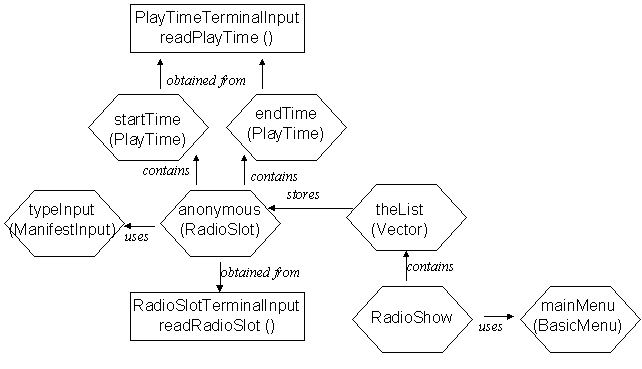

menus/BasicMenuDemonstration.java
menus/BasicMenuDemonstration.java
 radioslot/RadioSlotTerminalInput.java
radioslot/RadioSlotTerminalInput.java
To build and execute this program, the radioslot and playtime package of classes from waypoint 2 and the menu package as described in chapter 6 of the text book. You are advised to use the versions available from this page as they have been shown to be mututally compatible.
menus/BasicMenuDemonstration.java
This context diagram attempts to describe the relationships bewteen the various classes and instances in the RadioShow application.

The RadioShow application makes use of an instance of the BasicMenu class called mainMenu and also contains a Vector called theList. The Vector stores anonymous instances of the RadioSlot class each of which contains two instances of the PlayTime class. The typeInput ManifestInput instance and the class wide readPlayTime() and readRadioSlot() methods are used to obtain details of each RadioSlot from the terminal.
Hence even a very simple application such as this makes use of a number of instances and classes, the management of which is an essential part of software development.


Obtain all the source code files for the RadioShow application then build and execute it.
Make sure you are familiar with while, for and switch structures by looking them up in the index of the text book and reading the appropriate sections.
Locate the documentation for the Vector class in the JDK documentation and become familiar with the public methods and attributes that it supplies.